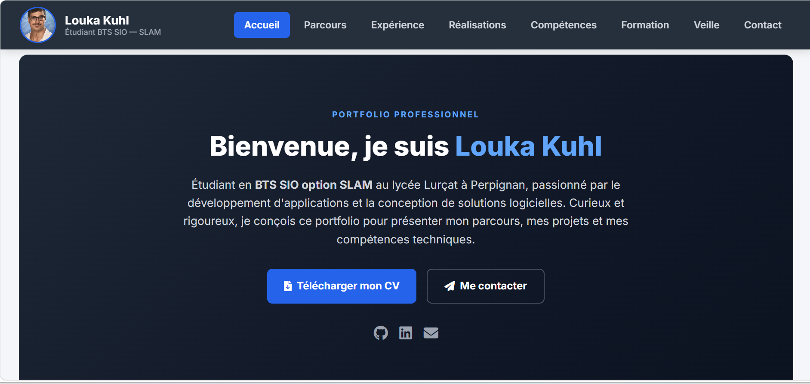

Portfolio Personnel
2025Création d'un site portfolio one-page pour présenter mon parcours, mes compétences et mes projets de manière claire et professionnelle.
Compétences mobilisées :
Structuration sémantique HTML · mise en page responsive (Flexbox/Grid) ·
organisation claire du contenu
Projet en cours de consultation